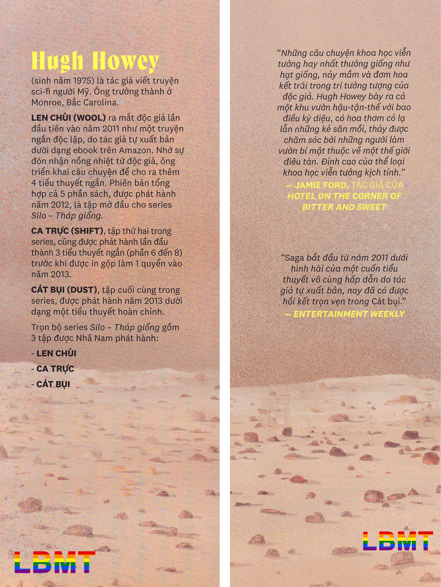

“CÓ AI ĐẰNG ĐÓ KHÔNG?”
“A lô? Vâng. Tôi đây.”
“A. Lukas. Chẳng thấy cậu nói gì cả. Thoạt đầu tôi cứ tưởng... cậu là ai khác cơ.”
“Không, vẫn là tôi đây. Chỉ mới chỉnh tai nghe thôi ấy mà. Sáng nay bận quá.”
“Thế à?”
“Ừ. Toàn những chuyện nhàm chán thôi. Họp ủy ban này nọ. Hiện thời bên bọn tôi đang hơi thiếu nhân lực. Phải bổ nhiệm lại nhiều quá.”
“Nhưng tình hình ổn cả rồi chứ? Có cuộc nổi dậy nào cần báo cáo không?”
“Không, không. Mọi sự đang trở lại như thường. Sáng ra, người người nhà nhà thức dậy đi làm. Đêm đến, họ ngủ vùi trên giường. Tuần này bên tôi vừa tổ chức một đợt quay số lớn, khiến một số người vui sướng lắm.”
“Tốt đấy. Rất tốt. Tiến độ máy chủ sáu thế nào rồi?”
“Suôn sẻ cả, cảm ơn đã hỏi thăm. Tất cả mật mã ông cung cấp đều đúng. Cho đến nay vẫn chỉ toàn những dữ liệu như trước thôi. Nhưng mà tôi không rõ tại sao cái mớ này lại quan trọng.”
“Cứ nghiên cứu tiếp đi. Mọi thứ đều quan trọng cả đấy. Không phải vô cớ mà nó lại có trong đấy đâu.”
“Ông cũng đã bảo như thế về các mục ghi trong mấy cuốn sách này. Nhưng trong đó có rất nhiều mục tôi thấy nhăng cuội ghê gớm. Khiến tôi không khỏi nghi ngờ độ chân thực của tất cả những điều này.”
“Tại sao? Cậu đang đọc gì thế?”
“Tôi đọc đến tập C rồi. Sáng nay tôi đọc về… một loại nấm. Đợi chút. Để tôi tìm đã. Đây rồi. Cordyceps.”
“Đó là một loại nấm à? Chưa nghe tên bao giờ cả.”
“Trong này bảo nó tác động sao đó đến não kiến, tái lập trình bộ não ấy như thể một cái máy vậy, thúc cho con kiến trèo lên cây trước khi chết...”
“Một cỗ máy vô hình có khả năng tái lập trình não bộ ư? Tôi tin chắc đó không phải một mục ngẫu nhiên đâu.”
“Thế hả? Vậy ý nghĩa của nó là gì thế?”
“Điều đó có nghĩa là... Nghĩa là chúng ta không được tự do. Không ai trong chúng ta được tự do cả.”
“Nghe phấn chấn ghê. Giờ tôi đã hiểu tại sao cô ấy lại bắt tôi trực bộ đàm rồi.”
“Thị trưởng của cậu hả? Có phải đó là lý do...? Đã lâu rồi không thấy cô ta nghe điện.”
“Ừ. Cô ấy đang đi vắng. Đang làm dở việc.”
“Việc gì thế?”
“Tốt nhất không nên nói. Nói ra chắc ông sẽ không ưng đâu.”
“Sao cậu lại nghĩ thế?”
“Bởi vì tôi cũng có thấy ưng đâu. Tôi đã cố gắng khuyên can cô ấy rồi. Nhưng chị chàng đôi khi hơi... cứng đầu.”
“Nếu đây mà là một chuyện sẽ gây ra rắc rối thì nên cho tôi biết. Tôi ở đây là để giúp đỡ mấy người. Tôi có thể đánh lạc hướng…”
“Vấn đề nằm ở chỗ đó... Cô ấy không tin tưởng ông. Cô ấy thậm chí còn không tin lần nào cũng là cùng một người gọi đến nữa kia.”
“Cùng một người thật mà. Chỉ là tôi thôi. Cái máy bóp méo giọng tôi.”
“Tôi chỉ đang nói với ông những gì cô ấy nghĩ thôi.”
“Tôi chỉ mong cô ta sẽ đổi ý. Tôi thực sự muốn giúp đỡ mà.”
“Tôi tin ông. Tôi nghĩ hiện giờ, điều tốt nhất ông có thể làm chỉ là cầu nguyện cho bọn tôi thôi.”
“Tại sao vậy?”
“Bởi vì linh tính mách bảo tôi rằng vụ này sẽ chẳng dẫn đến kết cục tốt đẹp nào đâu.”
